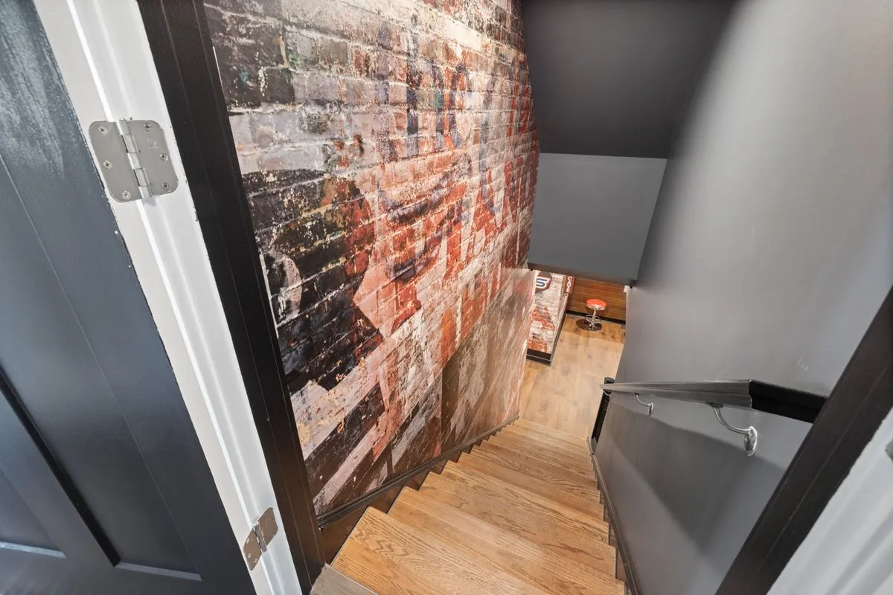
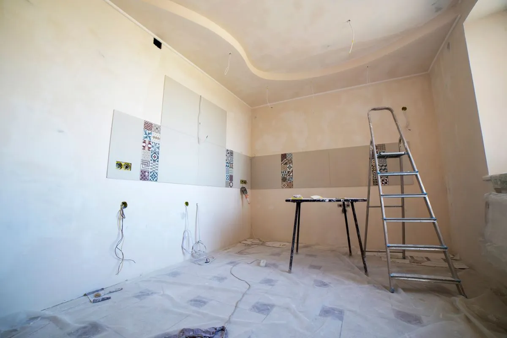

By Reno Rise. Published September 22, 2026. Last updated September 22, 2026. General planning information, not legal or engineering advice.

A basement staircase gets less design attention than almost any other feature in a renovation, right up until someone hits their head on a duct or a guest asks why the stairs feel steeper than the ones upstairs. The short answer: basement stairs are held to the same rise, run, headroom, handrail and guard rules as any other stair in the house, and the ideas below only work once those basics check out.
Everyone wants to talk about railing style first. A code review talks about headroom first. Both conversations matter, but only one of them keeps a moving box from becoming a story about the emergency room.
What Makes a Basement Staircase Different
Structurally, nothing. A basement stair follows the same Building Code chapter as the stair to the second floor. What is different is the room it lands in. Basement ceiling height is often the tightest in the house, so a basement stair is the one most likely to run into a duct, a beam or a low spot that was never a problem upstairs. If a ceiling height project is already on the table, the stairwell is usually where that conversation starts, because a lowered floor changes the stair run along with everything else.
The other difference is traffic. An unfinished basement stair often doubles as the route for a water heater, a sofa or a stack of moving boxes. A design that looks great and refuses to let anything wider than a person through it is a design that gets fought with for years.
Rise, Run, Headroom and Handrails: What Gets Checked
Every jurisdiction sets its own exact numbers for tread depth, riser height, headroom clearance and handrail height, and Ontario is no exception. Those numbers do change between Code editions, which is exactly why this article will not print a table of them and ask you to trust it years from now. The rule that actually matters is simpler and does not expire: before a basement staircase gets rebuilt, widened, relocated or has its opening changed, a designer or the City confirms the current figures against your specific stair, not a blog post.
- Rise and run. Every step in a flight needs to match the others closely. A basement stair that was patched together over the years, with one riser taller than the rest, is a tripping hazard even if nobody has tripped on it yet.
- Headroom. Measured from the sloped line of the stair nosings straight up to whatever is overhead, including ducts and beams that were not there when the house was built. This is the single most common basement stair failure, because it is invisible until someone six feet tall walks down for the first time.
- Tread depth. Deep enough for a full foot. A shallow, narrow tread is how a basement stair earns the nickname "the ladder."
- Handrail height and graspability. A rail you can actually close a hand around, mounted at a height a code review confirms for your stair.
If any of those four are already off on an existing staircase, that is worth fixing on its own, whether or not the rest of the basement is being touched.
Guards vs. Handrails, and Why Basements Mix Them Up

A handrail is what you hold going up and down. A guard is what stops you from falling off an open side of the stair or a landing. Basements confuse the two constantly, because an open-stringer stair down to an unfinished space often has neither, and that gap does not become a problem until the space gets finished and someone is standing at the top with a coffee. Both a handrail and a guard, sized to the specific stair, are what a designer checks for during a renovation, not an optional upgrade for later.
Basement Stair Railing Ideas
Once the numbers behind a rail are settled, the look is where a basement staircase gets to stop looking like an afterthought. A few directions that work well in a below-grade space:
- Wood top rail with metal balusters. A warm handrail with slim black metal spindles reads as intentional, not leftover, and it is forgiving of a basement that already has a mix of finishes.
- Cable railing. Horizontal steel cables keep sightlines open, which helps a stair that doubles as the only source of borrowed light from the floor above.
- Painted risers. On an open-stringer stair, painting the risers a contrast colour, or leaving them open for a look that reads industrial, is one of the cheapest changes with the biggest visual effect.
- Tempered glass panels. A cleaner, more modern look that keeps the stairwell feeling wide, at a higher material cost than metal balusters.
- A removable or bolted section. Worth asking for specifically if this stair is also how large items get into the basement. A panel that unbolts for a delivery, then goes back exactly where it was, saves the railing from being the thing that has to be rebuilt every time furniture moves.
None of these decisions happen in a vacuum. If a future legal secondary suite guide is even a maybe, the stair also needs to work as a shared or separate route for a tenant, which can change where it lands and how wide it needs to be.
Does a Basement Staircase Need a Permit in Toronto?
It depends on what is actually changing. Toronto Building lists structural or material changes, and relocating or enclosing existing spaces, among the work that needs a building permit. Refinishing an existing stair in the same location, with the same layout, is a different conversation from moving the stair, changing the opening in the floor above it, or widening it into a wall. Describe the exact scope before assuming either way.
Common Basement Staircase Mistakes
- Choosing a railing style before confirming headroom and rise and run, then having to redesign it once the code review comes back.
- Forgetting that a duct, sprinkler line or beam relocated for an unrelated reason can eat the headroom a stair was already tight on.
- Boxing a stairwell in with drywall before checking whether it is still wide enough to move a washer, dryer or sofa through later.
- Treating an open-stringer basement stair as "temporary" for years after the rest of the basement gets finished around it, so the one hazard nobody fixed is the one people use every day.
- Skipping a guard on an open landing because "it is just the basement," right up until it is not just storage anymore.
Questions to Ask Before You Renovate One
- Has headroom been measured against the current ceiling plan, including anything being added above the stair?
- Does this stair still need to fit a washer, dryer or other large item through it after the railing goes in?
- Who confirms the current rise, run, handrail and guard figures for this specific stair?
- If a legal secondary suite is a future possibility, does the stair layout still support that?
Picture the result: a basement staircase nobody thinks twice about using, which is exactly the point. The best stair is the one that disappears into the rest of the house.
General information, not legal or engineering advice. Confirm your project with Toronto Building and a qualified designer or contractor. Reno Rise does not issue permits or give code advice.
Frequently asked questions
What is the minimum headroom for a basement staircase?
Headroom minimums are set by the Building Code and are measured from the sloped line of the tread nosings to anything overhead, including ducts and beams. The exact figure can change between Code editions, so confirm the current number with a designer or Toronto Building for your specific stair.
Does a basement staircase need a handrail?
Yes, stairs generally need a handrail on at least one side, sized so it can actually be gripped, at a height a code review confirms. An open side of the stair or a landing also typically needs a guard, which is a different requirement from a handrail.
What is the difference between a handrail and a guard on a basement stair?
A handrail is what you hold while using the stairs. A guard is a barrier that prevents a fall off an open side of the stair or a landing. Basements with open-stringer or unfinished stairs are the most likely place to have one without the other.
Do I need a permit to renovate a basement staircase in Toronto?
It depends on the scope. Toronto Building lists structural or material changes among the work that needs a permit. Refinishing a stair in its existing location and layout is different from relocating it or changing the opening around it, so confirm your exact scope before starting.
What are good basement stair railing ideas that are still code-compliant?
Wood top rails with metal balusters, cable railing, tempered glass panels and painted or open risers are all popular looks. Any of them can meet the Code as long as the opening sizes, height and graspability are confirmed for the specific stair.
Can I leave a basement staircase open, without risers?
Sometimes, depending on the design and what is below. An open-riser stair still needs to meet the same rise, run and guard requirements as a closed one, so confirm the specific rules for that configuration with a designer.
Request a Basement Assessment
Share a few details about your basement and your plans. Reno Rise reviews what you send and matches your project with the contractor best suited to the work. This does not confirm an appointment, a quote or an approval.